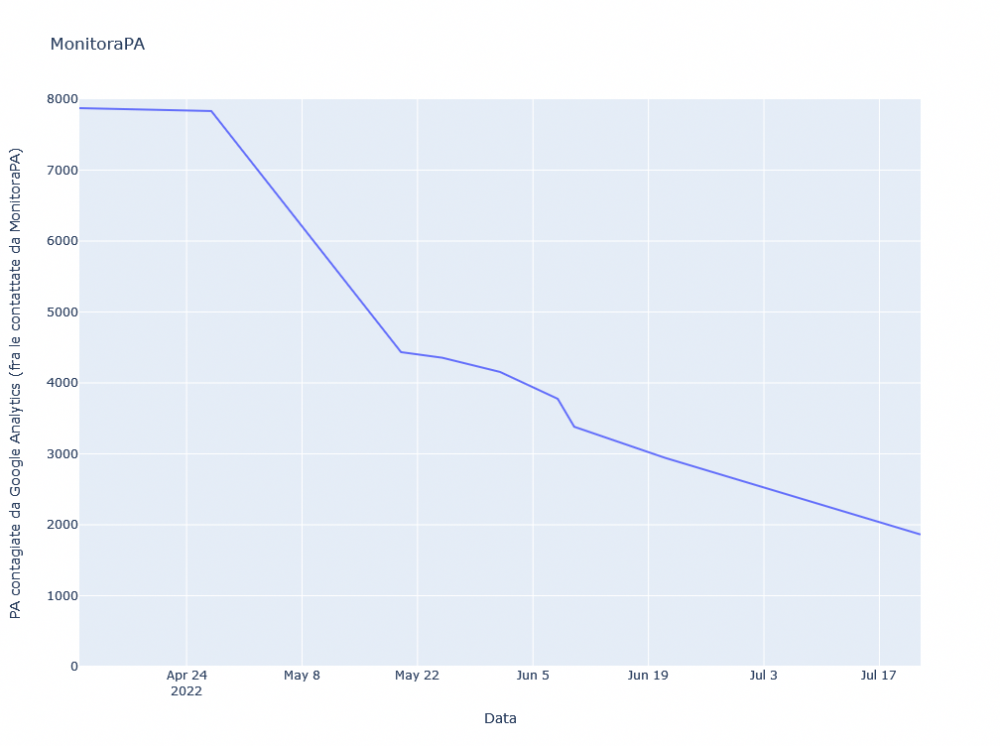

A meno di 43 giorni dallo scadere dell'ultimatum del Garante della Privacy, continua inarrestabile la liberazione dei siti web della Pubblica Amministrazione da Google Analytics.
E intanto Monitora PA cosa fa?
Un mese intenso
Al di là del caldo, Luglio è stato un mese molto faticoso per la piccola comunità di hacker, cittadini e cittadine di Monitora PA.
Anzitutto abbiamo dovuto rispondere a chi ha provato a sostenere che Google Analytics 4 risolva i problemi della legislazione USA. Per quanto ridicola, si tratta di una tesi estremamente diffusa ed energicamente amplificata da Google stessa e dai suoi compagni di merende.
Abbiamo provato a chiarire che non è vero, in vari ambiti e su varie piattaforme, ma particolarmente esaustiva è la risposta che abbiamo preparato per Tag Manager Italia che sosteneva esattamente questa tesi.
Riteniamo che tale risposta possa essere particolarmente utile a chi sta considerando di passare a Google Analytcs 4, non solo per le nostre considerazioni tecniche ancora in attesa di essere smentite, nonostante gli enormi interessi economici che vanno a minare, ma per la traduzione di vari passaggi del CNIL sul tema.
In estrema sintesi, no: Google Analytics 4 non risolve i problemi di compatibilità con il GDPR che caratterizzano Google Analytics 3 (aka Universal Analytics) perché per una volta tali problemi non dipendono da Google ma dalla normativa cui Google risponde.
La Segnalazione di Luglio
Come preannunciato alle Pubbliche Amministrazioni che abbiamo contattato nelle settimane scorse, abbiamo inviato una segnalazione al Difensore Digitale e al Dipartimento per la trasformazione digitale, riguardante le 994 PA i cui siti web non risultano raggiungibili o le cui PEC rispondono con un avviso di mancata consegna:
La nostra speranza è che anche queste PA dopo l'intervento delle istituzioni preposte, seguano l'esempio delle 317 amministrazioni che hanno effettivamente aggiornato l'Indice dei domicili digitali delle Pubbliche Amministrazioni e dei gestori di pubblici servizi, su cui si basa al momento il nostro monitoraggio.
Oltre le Pubbliche Amministrazioni
Il Garante della Privacy è stato chiaro:
Con l’occasione l’Autorità richiama all’attenzione di tutti i gestori italiani di siti web, pubblici e privati, l’illiceità dei trasferimenti effettuati verso gli Stati Uniti attraverso GA, anche in considerazione delle numerose segnalazioni e quesiti che stanno pervenendo all’Ufficio.
E invita tutti i titolari del trattamento a verificare la conformità delle modalità di utilizzo di cookie e altri strumenti di tracciamento utilizzati sui propri siti web, con particolare attenzione a Google Analytics e ad altri servizi analoghi, con la normativa in materia di protezione dei dati personali.
Allo scadere del termine di 90 giorni assegnato alla società destinataria del provvedimento, il Garante procederà, anche sulla base di specifiche attività ispettive, a verificare la conformità al Regolamento Ue dei trasferimenti di dati effettuati dai titolari.
Per aiutarlo a indirizzare efficientemente le proprie attività ispettive, abbiamo lavorato duramente alla nuova versione del nostro osservatorio, che è attualmente in fase di test e che contiamo di mettere "in produzione" ad agosto.
Il nuovo osservatorio è esplicitamente progettato per disaccoppiare la sorgente dati che
fornisce gli automatismi da analizzare (siti web, email, PEC etc...) dalle analisi effettuate: in questo modo
chiunque potrà applicare le nostre stesse analisi a insiemi di automatismi diversi.
Intendiamo infatti orientare il nostro osservatorio anche verso quelle aziende, quei partiti e quelle
organizzazioni che continuano a trasferire dati personali verso Google & friends.
Rispettare la Legge non è un optional.
È profondamente ingiusto che le migliaia di piccole aziende che rispettano i diritti cibernetici dei cittadini europei, debbano subire la concorrenza sleale di quelle che, per ignoranza, disinteresse o ingordigia, violano il GDPR nella convinzione di non venire beccate.
Non potete nascondervi
Il bello di un sito web è che chiunque può visitarlo. Anche noi. ;-)
Abbiamo in mente diverse strategie per scovare e segnalare ogni singolo sito web italiano che ancora trasferisce dati personali a Google tramite Google Analytics.
La prima e più semplice consiste nell'usare il dataset Tranco secondo l'approccio di cui il nostro amico Federico Leva è stato pioniere.
Ma per essere sicuri di non fare torto a nessuno dimenticando siti web magari meno visitati ma che trasmettono comunque a Google dati sensibili di cittadini inconsapevoli, abbiamo inviato una richiesta di accesso civico al Registro .IT.
Speciale Elezioni
Con l'approssimarsi della campagna elettorale abbiamo pensato di far cosa utile agli elettori puntando il nostro nuovo osservatorio sui siti web dei Partiti Politici italiani.
Le domande a cui cerchiamo risposta sono molte:
-
Quali partiti blaterano di sovranità nazionale...
mentre permettono ad aziende USA di profilare e manipolare i propri elettori? -
Quali partiti blaterano di europeismo...
mentre inviano i dati dei propri simpatizzanti a Google? -
Quali partiti blaterano di concorrenza e libero mercato...
mentre rafforzano oligopoli statunitensi? -
Quali partiti blaterano di legalità e diritti...
mentre violano il GDPR?
Miguel Martinez ha realizzato per noi un dataset che ci aiuterà a trovare le risposte.
E sappiate che per ora appaiono... desolanti.
Stay tuned! ;-)